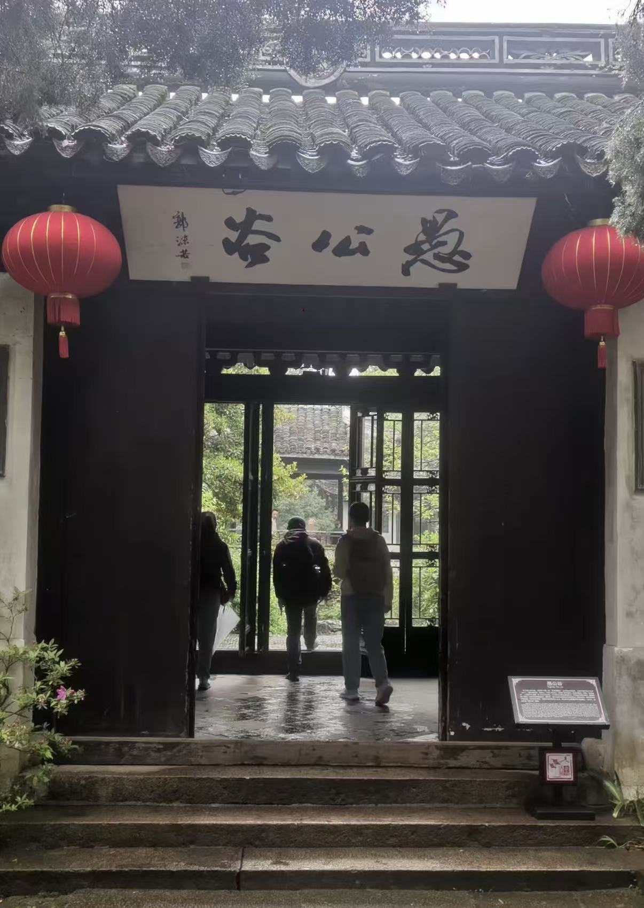
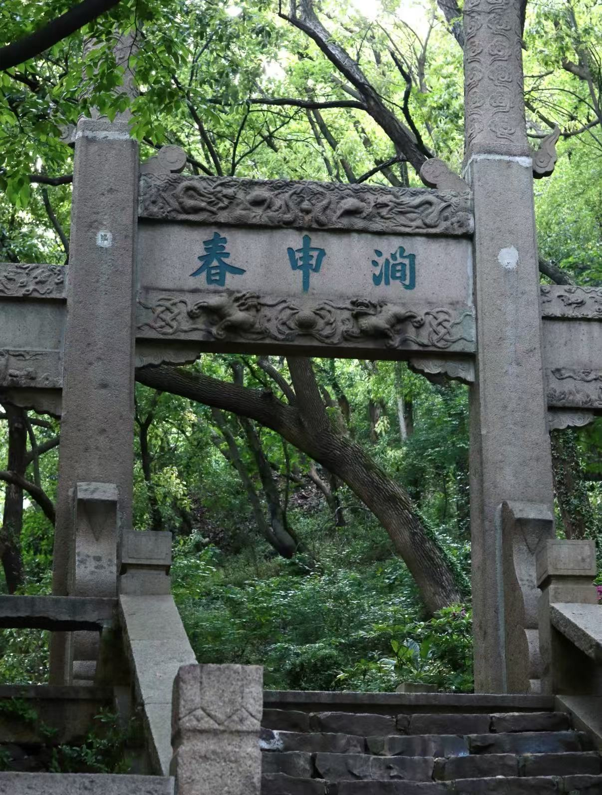
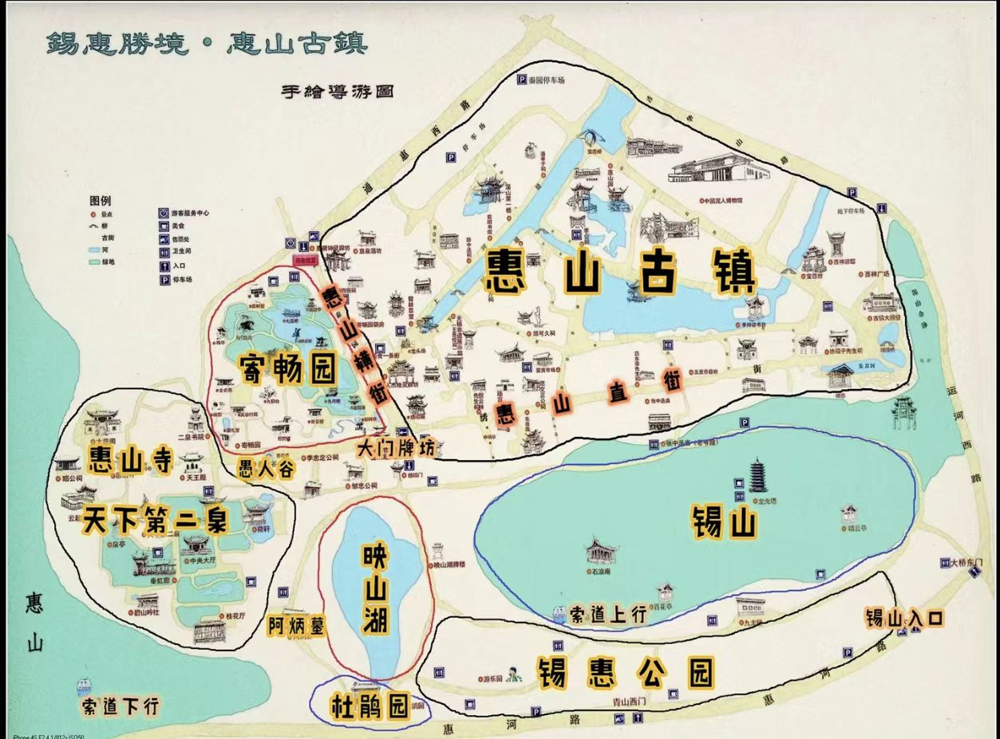
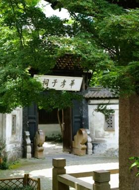
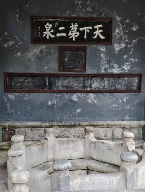
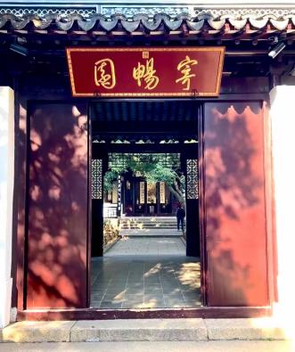

愚公谷 Yugong Valley
入园前须知 Three Things to Know Before Entering the Garden
为什么叫“愚公谷”？ Why the Name “Yugong Valley”?
“愚公谷”之名，直接取自柳宗元 “名溪为愚溪，丘为愚丘” 之意。柳宗元被贬永州后，把居所附近的溪、丘、泉、池一一冠以“愚”字，表面自嘲，内里是对“聪明人”世界的疏离。邹迪光取此典，是在为自己罢官后的选择作注脚：官场上的“智”他不要了，山水间的“愚”他认了。 The name Yugong Valley draws directly from Liu Zongyuan’s practice of naming a stream Yu Stream and a mound Yu Mound. After being demoted to Yongzhou, Liu Zongyuan prefixed the character Yu (foolish) to the streams, mounds, springs and ponds near his dwelling. Ostensibly an act of self‑deprecation, it expressed his detachment from a world obsessed with worldly shrewdness. Zou Diguang adopted this allusion to frame his own choice after dismissal from official office: he rejected the worldly “wisdom” of officialdom and embraced the “foolishness” found amid mountains and waters.
他索性自号 “愚谷” ，又因园在谷中，堂、亭皆以“愚”名，最终合而名园为“愚公谷”。当时人也有“山慧谷愚”的戏谑，但邹迪光坦然受之。 He styled himself Yugu. Since the garden nestled in a valley and its halls and pavilions all bore the character Yu, the garden was collectively named Yugong Valley. Contemporaries playfully remarked, “The hill is wise, the valley foolish”, yet Zou Diguang accepted the epithet calmly.
导览地图（点击放大查看） Tour Map (Click to enlarge)

地址：无锡惠山东麓，惠山古镇景区内，春申涧第一曲旁 Address: Beside first bend of Chunshen Stream, Huishan Ancient‑Town scenic area, Wuxi
公告栏 Notice Board
开放时间 Opening Hours
08:00 — 17:30（以景区现场公告为准） 08:00‑17:30 (subject to on‑site notices of the scenic area)
门票政策 Ticketing Regulations
包含于惠山古镇景区套票内，无单独小门票，优待政策参照景区官方公告。 Access included in Huishan Ancient‑Town combined ticket, no separate ticket. Preferential policies refer to official scenic‑area announcements.
园主邹迪光 The Garden Owner Zou Diguang
邹迪光，字彦吉，号愚谷，万历二年进士，官至湖广提学副使，罢官之后回到无锡。他和寄畅园主人秦耀相似，都是官场失意之后寄情山水、修筑园林的明代士大夫代表人物。 Zou Diguang, courtesy name Yanji, art name Yugu, obtained his jinshi degree in the second year of the Wanli reign and served as Vice Commissioner of Education in Huguang. After leaving office, he returned to Wuxi. Like Qin Yao, owner of Jichang Garden, he was a typical scholar‑official who turned to landscape and garden‑building after setbacks in official life.
他不只是园林主人，同时也是高产诗人与园林记录者。撰写的《愚公谷乘》，是文笔优美的造园专著；还创作《愚公谷五言律诗六十首》，园中六十处景点，一景对应一首诗。从第一景“春申涧第一曲”到第六十景“石语斋”，六十景各有名目，各配诗作。这种一景一诗完整配套的模式，在明代私家园林中十分少见。 What sets him apart is that he was not merely a garden owner, but also a prolific poet and meticulous chronicler of garden design. His Record of Yugong Valley is regarded in garden studies as an elegantly written treatise on garden‑making. He also composed sixty five‑character regulated verses for Yugong Valley, with one poem dedicated to each scenic spot. From the first view “The First Bend of Chunshen Stream” to the sixtieth “Stone Whisper Studio”, every spot had its own title and matching poem. Such a complete scheme of one scene, one poem was rare among private gardens of the Ming Dynasty.
春申涧与借景山水 Yugong Valley and Chunshen Stream: Borrowed Landscape
愚公谷坐落于春申涧第一曲的侧边，旧址大致处在春申涧、天下第二泉、旧惠山寺与绣嶂街之间，占地约五十亩。春申涧又叫黄公涧，相传战国春申君黄歇曾到此饮马。涧水自惠山山麓奔涌而下，遇上山雨，水位瞬间涨至四五尺，声势壮阔。 Yugong Valley sits beside the first bend of Chunshen Stream. Its original site roughly lay between Chunshen Stream, the Second Spring under Heaven, the former Huishan Temple and Xiuzhang Street, covering about fifty mu. Chunshen Stream, also known as Huanggong Stream, is said to be where Lord Chunshen Huang Xie watered his horses in the Warring States Period. Its water rushes down from the foothills of Huishan Hill; after heavy rain, the water can rise several chi within moments, creating a spectacular sight.
邹迪光造园，没有把涧水隔绝在园墙之外，而是将春申涧的山水“借”入园中。《愚公谷乘》中记录了从二泉到黄公涧三百余步的水景营造，让园外涧水与园内景致浑然一体。游览愚公谷，应当先看涧，再游园：涧是天然造化，园是人工营建，愚公谷的妙处，便在于二者之间模糊交融的边界。 Zou Diguang did not wall the water out when building the garden; instead, he “borrowed” the waters of Chunshen Stream into the composition. In Record of Yugong Valley, he documented his waterscape design stretching more than three hundred paces from the Second Spring to Huanggong Stream, blending the external stream and internal garden scenes into one. The proper way to visit Yugong Valley is to view the stream first, then the garden: the stream is nature’s creation, the garden man’s craft. The charm of Yugong Valley lies in the blurred boundary between the two.
诗文与名士往事 Verses, Figures and Bygone Splendour
古代诗文选读 Selected Poems
王士祯《入春申涧第一曲访愚公谷》 Wang Shizhen, Visiting Yugong Valley at the First Bend of Chunshen Stream
已探鸿渐泉，遂访愚公谷。
名园倚申涧，登顿穷九曲。
春雨响寒山，入门乱飞瀑。
叠阁瞰回峦，广池漱明玉。Having explored the Spring of Hongjian, I visit Yugong Valley.
The famed garden leans on Shen Stream; I climb and wind through nine bends.
Spring rain murmurs on cold hills; waterfalls burst at the gate.
Tiered pavilions overlook winding ridges; a broad pool rinses jade‑bright ripples.
解读：王士祯先游览天下第二泉，顺着春申涧寻访愚公谷。“春雨响寒山，入门乱飞瀑”写出园林紧贴涧流的特色，愚公谷的入口，并非规整门楼，而是沿着山涧向上的步道。 Note: Wang Shizhen travelled first to the Second Spring under Heaven, then followed Chunshen Stream upstream to Yugong Valley. The couplet vividly captures the garden’s identity against the stream. The “entrance” was not a neat gatehouse, but a path tracing the stream uphill.
厉鹗《王蒻林司勋邀游惠山访愚公谷四首·其四》 Li E, Invited by Director Wang Ruolin to Visit Huishan and Seek Yugong Valley (IV)
山围屋角木阴攒，㶁㶁春申涧响寒。
我辈向耽荒率味，不须金粉画阑干。Hills hem the roof, tree shadows cluster thick;
Chunshen Stream gurgles, its water chill.
We who love the unadorned, rustic charm
Need no railings painted with gold powder.
解读：厉鹗欣赏愚公谷朴素野逸的气质，山林环抱、涧水清寒，不需要华丽雕饰。时隔百年，和邹迪光以“愚”命名园林的初心遥相呼应。 Note: Li E cherished Yugong Valley’s rustic quality. A hundred years later, this aesthetic resonates with Zou Diguang’s original spirit in naming the garden “Foolish”.
邹迪光《春申涧第一曲》小序 Excerpt from Zou Diguang’s preface to The First Bend of Chunshen Stream
从二泉亭西折入狭道，古木数株，草蔚梳风，凡二百武许而得一亭，据水口，是为春申涧第一曲。Turning west from the Second Spring Pavilion into a narrow path, past several ancient trees and wind‑swept lush grass, some two hundred paces onward stands a pavilion perched at the water mouth — this is the First Bend of Chunshen Stream.
解读：园主本人的记录，描写从二泉亭走向园林的行路体验，穿过古木草丛，行走二百步，水口之上一座亭子，便是愚公谷的第一处景观。 Note: These are the garden‑owner’s own words, recording the walk from Second‑Spring Pavilion towards the garden.
楹联拾遗 Surviving Couplets
- 荷轩联：得山水清气，极天地大观。（钱松喦八十四岁书写） Lotus‑Pavilion: Draw pure aura from mountains and waters; behold the grand vista of heaven and earth. (Inscribed by Qian Songyan at age 84)
- 滤泉枝峰阁古联：扫石月盈帚，滤泉花满筛。 Lvquan‑Zhifeng‑Pavilion: Sweeping stone, the moon fills my broom; filtering spring water, flowers fill my sieve.
名士往事：晚明的文人沙龙 Stories of Notable Visitors: Another Cultural Hub
邹迪光修建愚公谷，不只为个人隐居。依靠广泛交游，这里成为晚明吴地十分活跃的士人文化中心。文坛名士、布衣山人、画家篆刻家、朝中高官汇聚于此，作诗结社、挥毫作画、参禅论道、欣赏戏曲。 Zou Diguang built Yugong Valley not only as his private retreat. Through his wide network of acquaintances, he turned it into an active literati circle in Wu during the late Ming. Men of letters, reclusive scholars, painters, seal‑carvers and senior officials gathered here to compose poems, paint, practise meditation and enjoy opera.
愚公谷昆曲活动尤其出名，邹迪光自家拥有邹氏家班，声名远扬，此地成为当时昆曲重要活动场地，邹迪光还曾与汤显祖在此诗文唱和。如果说寄畅园属于秦氏家族，愚公谷更像是依托园主人才情与人脉形成的文人沙龙。 Of particular note is Kunqu Opera. Zou Diguang maintained his private Zou Family Troupe, which won great renown. Yugong Valley became a key venue for Kunqu performance, and Zou Diguang exchanged poems with Tang Xianzu here. If Jichang Garden was a clan garden for the Qin family, Yugong Valley functioned more as a literati salon bound together by the owner’s talent and social connections.
惠山龙头河口的千人报德坊（今人“人杰地灵”坊），是万历年间邹迪光弟子感念师恩所建，相传坊上文字出自其子邹德基之手。虽然愚公谷在明末渐渐荒废，但这份人文纽带依旧留存。 A lingering afternote: the Thousand‑Person Virtue Memorial Archway at the Dragon‑Head‑River mouth of Huishan (today’s Ren‑Jie‑Di‑Ling Archway) was erected by Zou Diguang’s disciples in the Wanli era to honour his teaching. Its calligraphy is said to be the work of his son Zou Deji. Though Yugong Valley gradually fell into ruin by the late Ming, this bond between Zou Diguang and Huishan endured.
游览导览 Tour Guide
推荐游览动线：春申涧 → 愚公谷 → 华孝子祠 → 天下第二泉 → 寄畅园 Recommended Route: Chunshen Stream → Yugong Valley → Hua‑Filial‑Son Shrine → Second‑Best‑Spring → Jichang Garden
顺着春申涧溯流而上，先感受愚公谷所借来的山涧水源；再进入愚公谷，参观荷轩、滤泉、古玉兰。出门右转抵达华孝子祠，感受祠堂文化；继续步行前往天下第二泉、寄畅园，完成从晚明文人园林，走向江南名园典范的游览体验。 Walk upstream alongside Chunshen Stream to experience the borrowed mountain‑stream scenery of Yugong Valley, then visit Lotus Pavilion, Lvquan Spring and old magnolia trees. Turn right to Hua‑Filial‑Son Shrine, then proceed to the Second‑Best‑Spring and Jichang Garden, completing your tour from late‑Ming literati garden to the classic Jiangnan garden masterpiece.
春申涧 Chunshen Stream
愚公谷 Yugong Valley

华孝子祠 Hua‑Filial‑Son Shrine

天下第二泉 Second‑Best‑Spring

寄畅园 Jichang Garden

春申涧 Chunshen Stream

愚公谷 Yugong Valley

华孝子祠 Hua‑Filial‑Son Shrine

天下第二泉 Second‑Best‑Spring

寄畅园 Jichang Garden